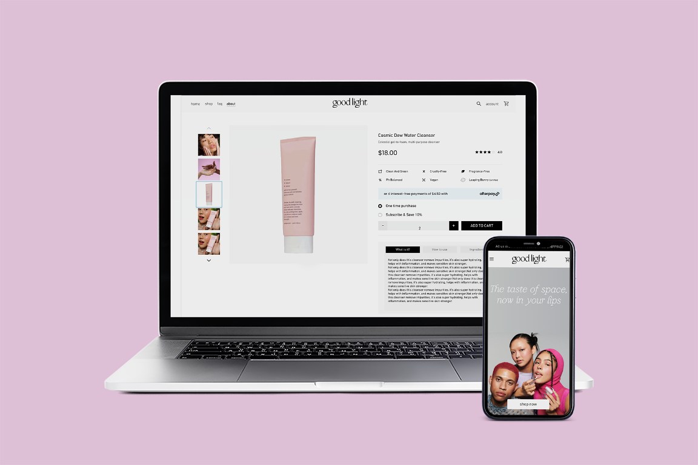
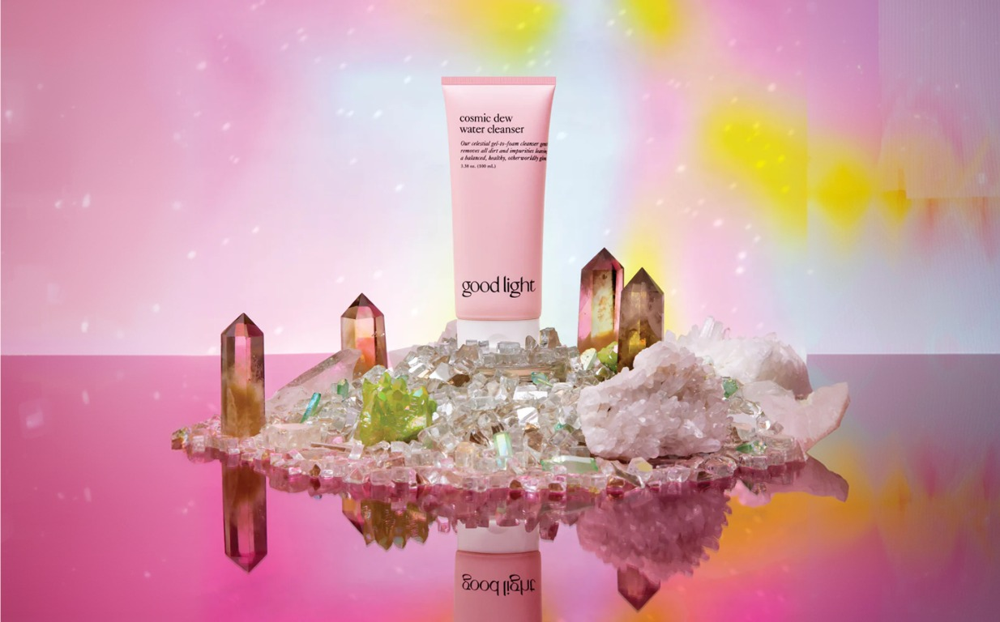

Ecommerce · UX/UI
Goodlight
I worked on the UX and UI of Goodlight's ecommerce experience, focusing on how users discover products, navigate categories and understand product information.
Rather than designing individual pages in isolation, I looked at the experience as a connected journey — from discovery to purchase.


The challenge
Ecommerce can become complicated quickly. Users need to understand what is available, find the right product, explore their options and feel confident about their decision — without getting lost along the way.
For Goodlight, I focused on creating a clearer relationship between navigation, product discovery and product information. Rather than approaching the experience screen by screen, I looked at the ecommerce journey as a connected experience.
The approach
Understanding the journey
Discover → Browse → Explore → Understand → Decide → Purchase
I looked at how users move through the ecommerce experience to define where the interface needed more clarity and how information could be structured more effectively.
Simplifying discovery
I worked on the relationship between navigation, categories and products so users could understand where they were and where they could go next.
Designing the interface
Once the experience was structured, I translated it into a visual system that balanced clarity, brand personality and usability.
- Clear hierarchy
- Product visibility
- Consistent components
- Scannable information
- Clear calls to action
- Responsive behaviour
Product experience
The product page was an important part of the experience. Rather than treating it simply as a place to display product information, I considered how the page could help users answer the questions they have before purchasing:
What is it? Why is it relevant to me? What do I need to know? What should I do next?
These questions informed the content hierarchy, structure and UI.
My contribution
I worked across the ecommerce experience and interface, defining flows and hierarchy and translating them into a consistent UI system.
My focus was on making the experience clearer and easier to navigate while maintaining Goodlight's visual identity.
Impact
Structured the ecommerce navigation to make browsing and product discovery easier to understand.
Designed the relationship between discovery, category browsing, product pages and purchase.
Created a consistent interface across the ecommerce experience.
Designed the experience to remain clear and usable across different screen sizes.
Outcome
A more structured ecommerce experience where navigation, product discovery and product information work together as one journey.
The project demonstrates my approach to ecommerce design: understanding the experience first, then designing the interface around it.
Final reflection
This project reflects the part of ecommerce design I enjoy most: turning a collection of pages into a coherent experience.
My focus was on the experience itself — how users move through the product, how information is structured and how the interface helps them make decisions.
UX, UI and ecommerce strategy come together when the journey feels simple, even when the underlying experience is complex.